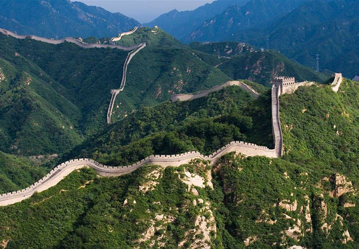
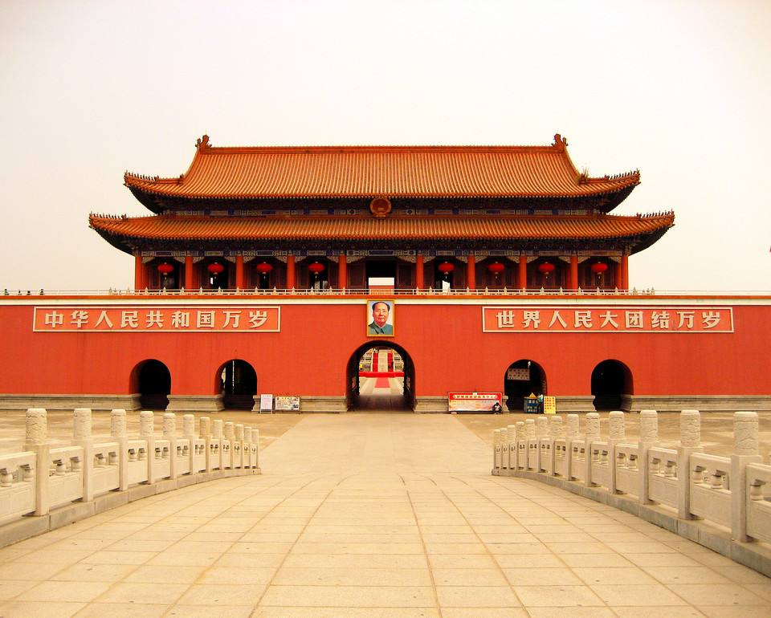

北京旅游
八达岭长城位于北京市延庆县军都山关沟古道北口。 八达岭由“八大岭”、“巴达岭”、“八道岭”、“把鞑靼”这四种谐音而得名。 八达岭是居庸关的外口，北往延庆、赤城等，西去张家口、大同等， 东到永宁、四海，南去昌平、北京等地区，可谓是四通八达， 所以它是古代一条重要的交通要道和防卫前哨，素有“京北第一屏障”之称。 八达岭长城是明长城向游人开放最早的地段，八达岭景区以八达岭长城为主， 兴建了八达岭饭店和由江泽民主席亲笔题名的中国长城博物馆等功能齐全的 现代化旅游服务设施。八达岭景区以其宏伟的景观、 完善的设施和深厚的文化历史内涵而著称于世。 “不到长城非好汉”，八达岭长城是古今中外各界人士到北京游览的必到之所， 迄今为止，八达岭长城已有包括尼克松、撒切尔夫人等在 内的三百多位世界知名人士曾登上八达岭长城一览这里的山河秀色。
 